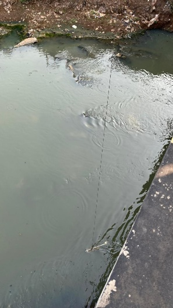
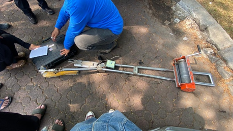
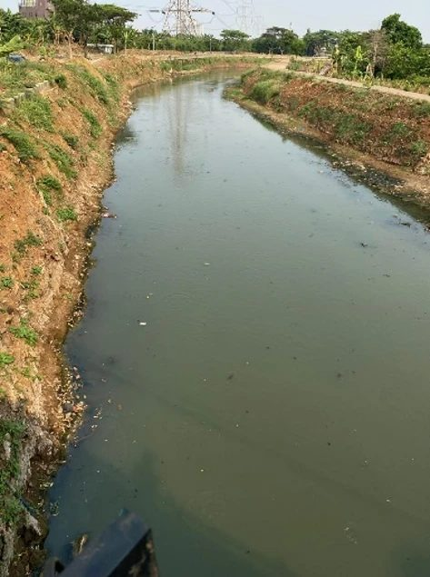
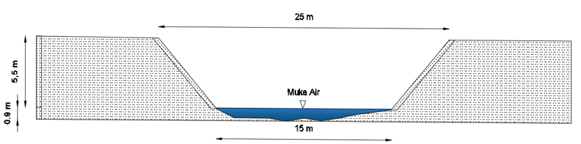

Model hujan-limpasan hanya sebaik data yang dipakai untuk mengujinya. Pada 18 Juli 2026, tim HESLab melakukan survei debit sesaat di Sungai Bekasi dan Sungai Angke sebagai bagian dari penelitian DIKTI Integrasi Data Satelit, Pemodelan Hidrologi, dan Machine Learning untuk Peringatan Dini Banjir JABODETABEK. Hasilnya dipakai untuk mengkalibrasi model hujan-limpasan. Tulisan ini menyajikan hasil pengukuran di Sungai Angke.

Apa itu debit sesaat?
Debit adalah volume air yang mengalir melewati suatu penampang sungai per satuan waktu, biasanya dalam meter kubik per detik (m³/s). Disebut sesaat karena pengukurannya mewakili kondisi aliran pada saat survei saja. Satu kali pengukuran belum menggambarkan debit harian atau musiman, tetapi menjadi titik acuan untuk menguji apakah debit hasil model sesuai dengan kenyataan di lapangan.
Cara mengukur
Cara yang umum dipakai adalah metode luas-kecepatan: penampang sungai dibagi menjadi beberapa pias oleh garis-garis tegak (vertikal). Pada tiap vertikal diukur kedalaman air dan kecepatan arusnya. Debit tiap pias adalah luas pias dikali kecepatan rata-ratanya, dan debit sungai adalah jumlah debit semua pias. Tata caranya di Indonesia diatur dalam SNI 8066:2015, Tata cara pengukuran debit aliran sungai dan saluran terbuka menggunakan alat ukur arus dan pelampung (Badan Standardisasi Nasional).
Dalam survei ini, tim HESLab memakai alat ukur arus (current meter) berbaling-baling yang sudah dikalibrasi. Alat diturunkan dari jembatan ke beberapa kedalaman, lalu jumlah putaran baling-baling dihitung selama 40 detik. Dari jumlah putaran itu, persamaan kalibrasi alat memberi kecepatan arus di titik tersebut.
Penampang Sungai Angke dibagi menjadi delapan vertikal yang berjarak 1,5 m. Pada tiap vertikal, kecepatan diukur di dua titik, yaitu pada 0,2 dan 0,8 kali kedalaman dari muka air, lalu dirata-ratakan. Vertikal yang dangkal (kedalaman 0,34 m) diukur di satu titik, pada 0,6 kali kedalaman.

Penampang Sungai Angke
Di lokasi pengukuran, Sungai Angke berpenampang trapesium dengan lebar atas sekitar 25 m dan tinggi tebing sekitar 5,5 m. Saat survei, lebar muka airnya 15 m dengan kedalaman terbesar 0,9 m.


Hasil
| Vertikal | Jarak dari tepi (m) | Lebar pias (m) | Kedalaman (m) | Kecepatan rata-rata (m/s) | Luas (m²) | Debit (m³/s) |
|---|---|---|---|---|---|---|
| 1 | 1,5 | 1,50 | 0,70 | 0,537 | 1,050 | 0,564 |
| 2 | 3,0 | 1,50 | 0,68 | 0,513 | 1,020 | 0,523 |
| 3 | 4,5 | 1,50 | 0,68 | 0,451 | 1,020 | 0,460 |
| 4 | 6,0 | 1,50 | 0,90 | 0,445 | 1,350 | 0,601 |
| 5 | 7,5 | 1,50 | 0,66 | 0,171 | 0,990 | 0,169 |
| 6 | 9,0 | 1,50 | 0,85 | 0,231 | 1,275 | 0,295 |
| 7 | 10,5 | 1,50 | 0,64 | 0,022 | 0,960 | 0,021 |
| 8 | 12,0 | 2,25 | 0,34 | 0,022 | 0,765 | 0,017 |
| Jumlah | 8,43 | 2,65 |
Debit Sungai Angke saat survei adalah 2,65 m³/s, dengan luas penampang basah 8,43 m², sehingga kecepatan rata-rata penampang sekitar 0,31 m/s. Arus terkuat ada di sisi kiri penampang (vertikal 1–4, sekitar 0,45–0,54 m/s), sedangkan di sisi kanan arusnya sangat lemah. Pada vertikal 7 dan 8 baling-baling tidak berputar; angka 0,022 m/s di sana berasal dari persamaan kalibrasi alat, sehingga kecepatan sebenarnya bisa lebih kecil.
Keterbatasan dan survei berikutnya
Survei ini dilakukan pada musim kemarau, yang tahun ini diperkuat oleh El Niño. Aliran Sungai Angke saat itu kecil: muka air hanya selebar 15 m di dasar penampang yang lebar atasnya sekitar 25 m. Akibatnya, hasil ini mewakili aliran rendah dan tidak menangkap debit besar yang terjadi saat banjir.
Untuk model peringatan dini banjir, debit besar itulah yang paling penting. Karena itu, survei berikutnya disarankan dilakukan pada musim hujan, saat atau sesudah hujan lebat, agar diperoleh debit yang relevan untuk mengkalibrasi model banjir, sekaligus menambah titik pada lengkung debit di muka air tinggi.
Untuk apa data ini?
Hal terpenting dari survei ini adalah data untuk membangun lengkung debit (rating curve) penampang Sungai Angke, yaitu hubungan antara tinggi muka air dan debit. Dengan lengkung debit, debit dapat diperkirakan dari pengamatan tinggi muka air saja. Satu pengukuran pada aliran rendah baru memberi satu titik pada lengkung itu; titik pada muka air yang lebih tinggi masih diperlukan agar lengkung juga berlaku saat banjir.
Untuk kalibrasi model hujan-limpasan, data debit jam-jaman di lokasi ini belum tersedia. Karena itu, model dikalibrasi dengan membandingkan kapasitas penampang penuh (bankfull capacity) dengan kejadian banjir yang meluap, lalu dengan debit hasil model pada jam terjadinya luapan. Cara ini tidak ideal. Bila datanya tersedia, model seharusnya dikalibrasi dengan deret debit jam-jaman.
Terima kasih
Terima kasih kepada PT Pusaka Utama yang telah membantu pelaksanaan survei ini.